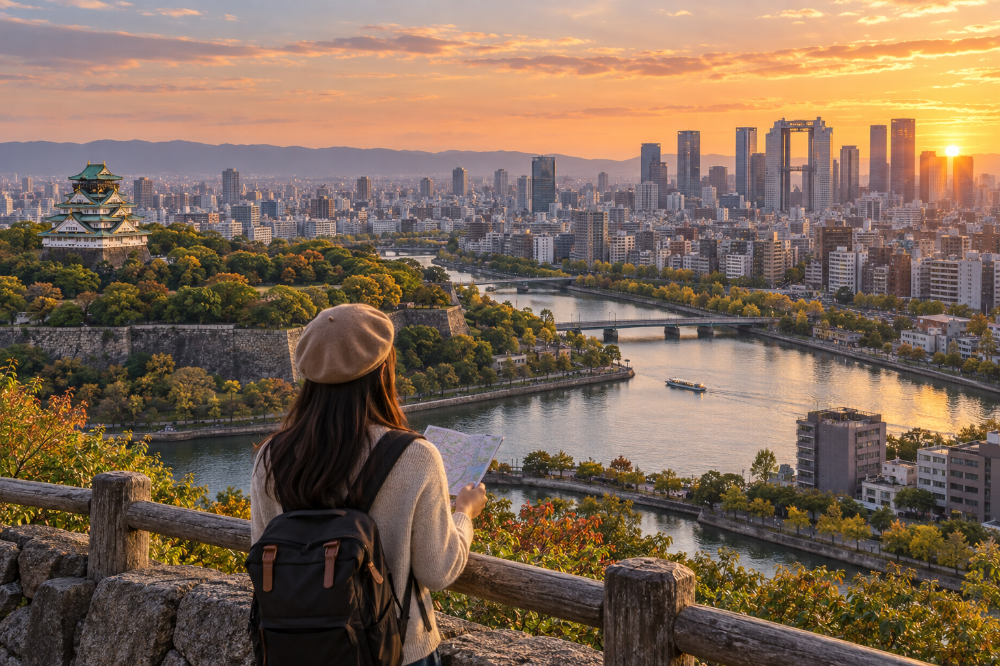
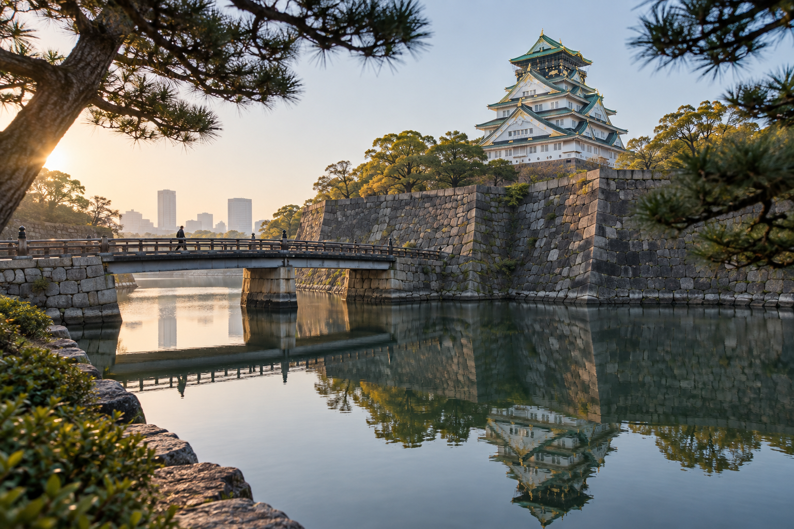
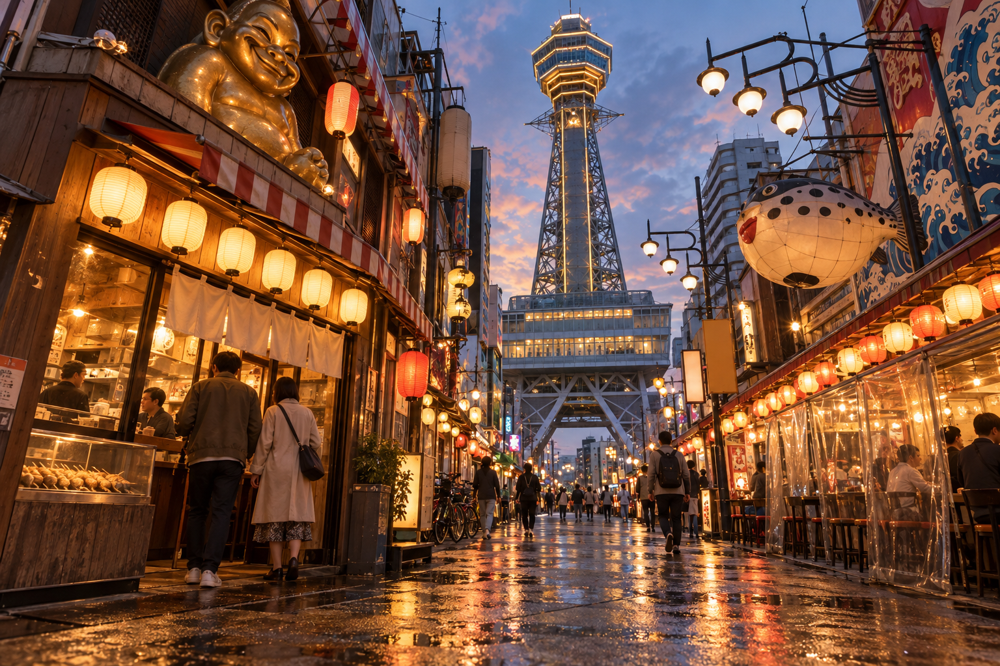

Osaka 2-Day Itinerary
Two full days is enough to experience Osaka's main first-time highlights if you plan by area instead of moving back and forth across the city. Osaka is easier to cover than Tokyo, but its major sights still sit in different districts. A good two-day route should reduce unnecessary train rides and leave real time for food, shopping, and evenings.
This itinerary separates Osaka into two clear sightseeing days. Day 1 combines Osaka Castle, central Osaka, and Umeda, moving from history into the city's modern northern skyline. Day 2 focuses on Kuromon Market, Namba, Shinsekai, Tennoji, Shinsaibashi, and Dotonbori, ending in the part of Osaka that is strongest after dark.
The route assumes two full sightseeing days. If you arrive from Kyoto or Tokyo in the afternoon, do not count that partial arrival day as one of the two unless you deliberately shorten the itinerary.
Osaka 2-Day Itinerary at a Glance

| Day | Route | Main Experience |
|---|---|---|
| Day 1 | Osaka Castle → Nakanoshima → Umeda → Umeda Sky Building | History, city architecture and modern Osaka |
| Day 2 | Kuromon → Namba → Shinsekai /Tennoji → Shinsaibashi → Dotonbori | Food, retro Osaka, shopping and nightlife |
This division keeps the route geographically sensible.
Day 1 stays mainly in central and northern Osaka.
Day 2 stays mainly in Minami and southern-central Osaka.
Who Is This 2-Day Osaka Itinerary for?
This route works especially well if:
- ✓It is your first visit to Osaka
- ✓You have two complete sightseeing days
- ✓You want the classic first-time highlights
- ✓Food and evenings matter as much as attractions
- ✓You are comfortable walking
- ✓You prefer an efficient route rather than a long attraction checklist
- ✓Universal Studios Japan is not one of these two sightseeing days
If USJ is a major priority, treat it as its own day.
Two Osaka days including USJ really means:
1 city sightseeing day + 1 theme-park day
which is a different trip.
Is Two Days Enough for Osaka?
Yes.
Two full days gives you enough time for:
- ✓Osaka Castle
- ✓Umeda
- ✓Namba
- ✓Dotonbori
- ✓Shinsekai
- ✓Kuromon
- ✓Shopping
- ✓Several Osaka food experiences
You will not see every district.
That is fine.
For a first visit, the goal should be to experience Osaka's strongest contrasts rather than spending both days rushing between train stations.
Should You Spend Three Days Instead?
Three days is better if you want:
- ✓Universal Studios Japan
- ✓Osaka Aquarium
- ✓More shopping
- ✓Museums
- ✓Slower food exploration
- ✓Bay Area
- ✓Longer neighborhood time
The future Osaka 3-Day Itinerary should redistribute the city more slowly rather than simply adding another attraction to this route.
Where Should You Stay for This Itinerary?
At a broad level, the strongest first-time bases are:
- ✓Namba
- ✓Shinsaibashi
- ✓Umeda
- ✓Tennoji
For this two-day route, I would particularly consider:
Namba
if food, nightlife, and Dotonbori matter most.
Choose:
Umeda
if transport, regional trains, and a more modern central base matter more.
A separate Where to Stay in Osaka: Best Areas for First-Time Visitors guide will compare these properly.
Do You Need an Early Start?
Day 1 does not require a sunrise start.
A realistic target is:
8:30–9:00 AM
around Osaka Castle.
Day 2 benefits from an earlier start if you want to visit Kuromon before moving into the rest of Minami.
Do not force 6 AM starts simply because you are in Japan.
Osaka is a city where later evenings are part of the experience.
Day 1: Osaka Castle, Nakanoshima and Umeda

Day 1 moves from Osaka's most famous historic landmark toward the modern northern city.
The route is:
Osaka Castle → lunch → Nakanoshima → Umeda → Umeda Sky Building
This gives you a balanced first day without entering Dotonbori too early.
Save Osaka's strongest nightlife district for Day 2 evening.
8:30–9:00 AM: Arrive at Osaka Castle Park
Start around Osaka Castle Park.
The park is much larger than the castle tower alone.
Allow time for:
- ✓Moats
- ✓Stone walls
- ✓Gates
- ✓Castle views
- ✓Park scenery
If you arrive slightly before the museum opens, use that time outside.
This gives you a calmer start and means you are ready to enter around opening time.
Why Start with Osaka Castle?
The castle is easier to appreciate before your energy drops later in the day.
It also gives the itinerary a logical progression:
historic Osaka → modern Osaka
rather than beginning inside a shopping district and then interrupting the day with a major historical site.
9:00–11:00 AM: Osaka Castle Museum and Grounds
The present Osaka Castle tower houses a history museum.
It is not an untouched original medieval castle interior.
That distinction matters.
The current main tower was reconstructed in the 20th century, while the wider castle site reflects a much longer history tied to Toyotomi Hideyoshi, later Tokugawa control, war, rebuilding, and modern Osaka.
Should You Go Inside?
For most first-time visitors:
yes, if Osaka history interests you.
Inside, the museum helps explain the people and events behind the castle.
You can also gain elevated views of the surrounding city.
Skip the Museum If:
- ✓You care mainly about exterior photography
- ✓You already have a castle-heavy Japan itinerary
- ✓You plan a Himeji day trip
- ✓Museum interiors are not your interest
You can still enjoy:
- ✓Park
- ✓Moats
- ✓Walls
- ✓Exterior views
without entering the tower.
How Much Time Should You Allow?
For the main tower plus nearby grounds:
about 1.5–2 hours
is reasonable for many first-time visitors.
Spend longer if:
- ✓History interests you
- ✓Seasonal scenery is strong
- ✓You enjoy photography
Do not rush through the park simply because another attraction is scheduled later.
Osaka Castle vs Himeji Castle
If your wider Japan trip includes Himeji Castle, remember that the two experiences are different.
Himeji is especially important for surviving original castle architecture.
Osaka Castle is useful for:
- ✓Osaka history
- ✓Museum interpretation
- ✓City landmark value
- ✓Large urban castle grounds
You do not necessarily need to choose only one.
But if time is limited and original castle architecture is your main interest, Himeji may deserve more weight.
11:00 AM–12:00 PM: Explore More of Osaka Castle Park or Move Toward Lunch
Do not schedule another distant sight immediately after leaving the tower.
Use this hour flexibly.
You can:
- ✓Walk around additional castle grounds
- ✓Take photos
- ✓Sit in the park
- ✓Begin moving toward lunch
This is particularly useful in spring, when the park can become a destination in its own right.
Cherry Blossom Season
During blossom season, expect:
- ✓More visitors
- ✓Slower walking
- ✓More photography
- ✓Busier food areas
If the park looks especially good on your visit, give it additional time and reduce a later optional stop.
A seasonal highlight should not be rushed simply to protect a generic schedule.
12:00–1:00 PM: Lunch
Eat before continuing toward Nakanoshima and Umeda.
Possible approaches include:
- ✓Lunch near Osaka Castle
- ✓Eat during the move toward central Osaka
- ✓Continue toward the Nakanoshima side and eat there
Do not travel all the way to Dotonbori simply because you want Osaka food.
You will have a full Minami day later.
Save the famous southern food districts for Day 2.
1:00–2:30 PM: Nakanoshima
Next, spend some time around Nakanoshima.
Nakanoshima sits between waterways in central Osaka and provides a calmer transition between Osaka Castle and dense Umeda.
The area is known for a mix of:
- ✓River scenery
- ✓Historic civic architecture
- ✓Cultural buildings
- ✓Modern offices
- ✓Open walking spaces
You do not need to treat this as a major ticketed attraction.
It works best as a walk.
What to Look For
Depending on your route and interests, you may pass or explore around:
- ✓Osaka City Central Public Hall
- ✓Riverfront
- ✓Historic buildings
- ✓Bridges
- ✓Cultural institutions
This adds another side of Osaka beyond:
castle + neon + shopping.
Is Nakanoshima Essential?
No.
It is the most optional major block on Day 1.
Keep It If:
- ✓Architecture interests you
- ✓Weather is good
- ✓You enjoy walking
- ✓You want a slower transition into Umeda
Skip It If:
- ✓You arrived late
- ✓Rain is heavy
- ✓Shopping matters more
- ✓You want more Umeda time
If you skip it, go directly from the castle side toward Umeda.
Why Nakanoshima Fits This Day
The important point is geography.
You are moving generally:
Osaka Castle → central Osaka → Umeda
rather than:
Osaka Castle → Namba → Umeda → Namba
That reduces unnecessary north-south crossings.
2:30–3:00 PM: Continue to Umeda
Move toward the Umeda / Osaka Station area.
Once you arrive, stay in northern Osaka for the rest of the day.
This is one of the largest commercial and transport districts in the city.
Allow extra time if this is your first encounter with Osaka Station.
The station complex can initially feel confusing because multiple:
- ✓Railway operators
- ✓Shopping centers
- ✓Underground passages
- ✓Department stores
connect across the area.
You do not need to understand the whole complex.
Follow signs for your immediate destination.
3:00–4:30 PM: Explore Umeda
Spend the afternoon around Umeda.
Depending on your interests, use this time for:
- ✓Shopping
- ✓Coffee
- ✓Osaka Station architecture
- ✓Department stores
- ✓Electronics
- ✓Observation-deck approach
- ✓Rest
This is deliberately less structured than Osaka Castle.
You have already completed a major historical attraction.
Umeda is about experiencing modern Osaka.
Osaka Station Area
Take a little time to look around the station complex rather than using it only as a train stop.
This district demonstrates Osaka's role as one of western Japan's major urban and transport centers.
You may find:
- ✓Elevated walkways
- ✓Large commercial complexes
- ✓Department stores
- ✓Restaurants
- ✓Open city views
Do Not Overschedule Umeda
It is easy to lose time inside huge stores and station buildings.
If you plan to visit an observation deck later, keep an eye on the clock.
Shopping can always expand to fill the entire afternoon.
4:30–6:30 PM: Umeda Sky Building
Finish the main sightseeing day at the Umeda Sky Building.
The building's observatory provides wide views across Osaka and is one of the city's best-known skyline experiences.
Late afternoon is a strong time to visit because, when weather and season cooperate, you may experience:
- ✓Daylight
- ✓Sunset
- ✓City lights
within the same visit.
Should You Time It Exactly for Sunset?
Not too rigidly.
Sunset depends on:
- ✓Season
- ✓Weather
- ✓Clouds
- ✓Entry queues
Use sunset as a planning target, not an appointment.
If the sky is completely overcast, there is little value in reorganizing the whole day just to reach an exact sunset minute.
How Long Should You Stay?
Around:
1–1.5 hours
works for many visitors.
Spend longer if:
- ✓Weather is clear
- ✓You enjoy photography
- ✓The skyline is one of your main interests
Do You Need Multiple Osaka Observation Decks?
No.
Osaka has several elevated viewpoints.
For a two-day trip, I would normally choose one major skyline experience rather than paying for multiple similar views.
If you strongly prefer another viewpoint, substitute it.
Do not add several simply because they appear on attraction lists.
6:30 PM Onward: Dinner in Umeda
Stay around Umeda for dinner.
This area has a huge range of options, including:
- ✓Department-store dining
- ✓Casual restaurants
- ✓Izakaya
- ✓Japanese food
- ✓International food
- ✓Underground dining areas
You do not need to cross Osaka for dinner.
That would reduce the geographical efficiency of Day 1.
Why Not Dotonbori Tonight?
You can visit Dotonbori if you desperately want to.
But I recommend saving it for Day 2.
The reason is simple.
Day 2 already concentrates on:
- ✓Namba
- ✓Shinsaibashi
- ✓Southern Osaka
Dotonbori fits naturally there.
There is no need to travel:
Umeda → Dotonbori → hotel
just to say you saw the neon on both nights.
Optional Evening: Umeda After Dark
If you still have energy after dinner, stay around the district.
You can explore:
- ✓Osaka Station surroundings
- ✓Department stores
- ✓Local bars
- ✓Cafes
- ✓Illuminated city streets
This gives Day 1 its own evening identity.
Day 2 will feel very different.
Day 1 Schedule Summary
| Time | Stop |
|---|---|
| 8:30–9:00 AM | Arrive at Osaka Castle Park |
| 9:00–11:00 AM | Osaka Castle Museum + grounds |
| 11:00 AM–12:00 PM | Park / flexible time |
| 12:00–1:00 PM | Lunch |
| 1:00–2:30 PM | Nakanoshima |
| 2:30–3:00 PM | Move toward Umeda |
| 3:00–4:30 PM | Umeda / Osaka Station |
| 4:30–6:30 PM | Umeda Sky Building |
| Evening | Dinner in Umeda |
These are flexible time blocks.
They are not reservations.
What to Cut if Day 1 Runs Late
Use this order.
Cut First
Nakanoshima
It is valuable but optional.
Reduce Next
Umeda shopping time.
Protect
- ✓Osaka Castle
- ✓One meaningful Umeda experience
If skyline views are not important to you, you can also skip the Umeda Sky Building and enjoy a slower Umeda afternoon instead.
Day 1 Alternative for History-Focused Travelers
Use:
Osaka Castle → longer museum/park visit → Nakanoshima
Then spend less time shopping in Umeda.
This gives the first day more historical and architectural depth.
Day 1 Alternative for Shopping-Focused Travelers
Use:
Osaka Castle → Umeda
Skip Nakanoshima.
This gives you several extra hours around:
- ✓Osaka Station
- ✓Department stores
- ✓Shopping centers
- ✓Electronics
Day 1 Alternative for Bad Weather
Rain makes Nakanoshima less important.
Do:
Osaka Castle → Umeda
and spend more time in:
- ✓Department stores
- ✓Shopping centers
- ✓Covered/indoor station areas
Visit the observation deck only if visibility makes it worthwhile.
Why Day 1 Works
The first day has a clear progression:
historic Osaka → central city → modern Osaka
You are not jumping randomly between north and south.
That leaves Day 2 free to focus almost entirely on Osaka's strongest southern districts.
It also prevents the biggest two-day mistake:
trying to see Dotonbori, Osaka Castle, Shinsekai, Umeda, and Kuromon all in one exhausting first day.
Day 2: Kuromon Market, Namba, Shinsekai, Tennoji, Shinsaibashi and Dotonbori

Day 2 is the Osaka most first-time visitors imagine before arriving.
The route combines:
- ✓Food
- ✓Shopping
- ✓Retro streets
- ✓Modern southern Osaka
- ✓Neon
- ✓Nightlife
The route is:
Kuromon Market → Namba/Nipponbashi → Shinsekai → Tennoji/Abeno → Shinsaibashi → Dotonbori
The most important planning decision is saving Dotonbori for the evening.
Do not rush there first thing in the morning simply because it is Osaka's most famous district.
Kuromon works better during the day, while Dotonbori becomes more atmospheric after the signs and streets light up.
9:00–10:30 AM: Start at Kuromon Ichiba Market
Begin at Kuromon Ichiba Market.
The covered market runs for roughly 580 meters and contains a large mix of:
- ✓Seafood shops
- ✓Produce
- ✓Meat
- ✓Sweets
- ✓Tea
- ✓Prepared food
- ✓Restaurants
- ✓Specialty ingredients
Individual shops keep their own schedules, so there is no single opening time that applies to the whole market.
That is why morning to early midday is a better planning window than late evening.
Do Not Arrive Already Full
Kuromon works best when you have room to try something.
You might choose:
- ✓Seafood
- ✓Fruit
- ✓Japanese sweets
- ✓Tea
- ✓A small cooked dish
But do not turn the market into a challenge to eat at every popular stall.
Day 2 includes plenty of food later.
Breakfast at Kuromon?
You can use the market as a late breakfast or early snack stop.
That works especially well if your hotel breakfast is:
- ✓Expensive
- ✓Too heavy
- ✓Too late
However, not every shop opens at the same time.
Do not build the entire morning around one specific vendor unless you have checked its current schedule.
How Long Should You Spend?
Around:
1–1.5 hours
is enough for many first-time visitors.
Food-focused travelers can spend longer.
If you dislike markets, walk through for 30–45 minutes and continue.
Kuromon Market Etiquette
The market can become crowded.
Be considerate around:
- ✓Shop entrances
- ✓Food counters
- ✓Narrow passages
Follow each vendor's instructions about where to eat purchased food.
Do not block the walkway while taking long videos or group photos.
10:30 AM–12:00 PM: Nipponbashi and Namba
From Kuromon, continue through the wider Nipponbashi and Namba area.
This is one reason Day 2 works well.
You are not taking trains between every stop.
Several southern Osaka districts connect naturally on foot.
Nipponbashi and Den Den Town
If you are interested in:
- ✓Anime
- ✓Manga
- ✓Gaming
- ✓Figures
- ✓Electronics
- ✓Collectibles
spend some time around Den Den Town.
It is Osaka's best-known district for this type of shopping.
Skip Den Den Town If:
- ✓Pop culture is not an interest
- ✓You want more time in Shinsekai
- ✓Shopping is low priority
There is no reason to walk through electronics and hobby stores simply because they appear in another person's itinerary.
Continue Toward Namba
Namba is not one individual attraction.
It is one of Osaka's major:
- ✓Transport
- ✓Shopping
- ✓Entertainment
- ✓Dining
districts.
Use this part of the morning to explore rather than trying to identify one mandatory landmark.
Should You Visit Dotonbori Now?
You are close enough to do so.
But I would wait.
You will return toward this area later.
Visiting Dotonbori at:
11 AM
and then again at:
7 PM
adds little unless you specifically want daytime photography.
Save your main visit for after sunset.
12:00–12:30 PM: Move Toward Shinsekai
Continue south toward Shinsekai.
Depending on your exact position and energy, you can:
- ✓Walk part of the way
- ✓Use Osaka Metro
- ✓Use another convenient local route
Do not feel obligated to walk every kilometer simply because the districts appear close on a map.
You still have a long afternoon and evening.
12:30–2:15 PM: Shinsekai
Spend early afternoon in Shinsekai.
This district gives you one of the clearest contrasts with the polished Umeda experience from Day 1.
Expect:
- ✓Colorful signs
- ✓Casual restaurants
- ✓Tsutenkaku Tower
- ✓Retro atmosphere
- ✓Kushikatsu
- ✓Busy streets
This is a good place to slow down and eat.
Lunch in Shinsekai
Shinsekai is closely associated with kushikatsu, deep-fried skewers.
You can make this your main lunch.
Possible skewers include:
- ✓Meat
- ✓Seafood
- ✓Vegetables
- ✓Cheese
- ✓Other ingredients
You do not need to order a huge set.
Try what interests you.
Avoid a Huge Kuromon Breakfast
This is why I recommended keeping Kuromon relatively light.
If you eat a full seafood meal at 10 AM, Shinsekai lunch may become another meal you are forcing yourself to finish.
Osaka food is more enjoyable when the itinerary leaves actual appetite.
Should You Go Up Tsutenkaku Tower?
Optional.
For this two-day itinerary, I would not make it mandatory.
Day 1 already includes a skyline experience at Umeda Sky Building.
Adding another paid observation tower may give you less value than spending more time on the streets.
Visit Tsutenkaku If:
- ✓The tower itself interests you
- ✓Retro Osaka history is a priority
- ✓You skipped Umeda Sky Building
- ✓You enjoy observation decks
Skip It If:
- ✓You already got your skyline view on Day 1
- ✓You prefer food and neighborhoods
- ✓The entry wait is long
- ✓You are running behind
The street-level view of Tsutenkaku is already an important part of Shinsekai.
Current Planning Note
Tsutenkaku now uses timed-entry reservations for admission, and evening slots can sell out.
If you decide the tower is important, check its current reservation system before the trip rather than assuming you can always walk straight in.
2:15–2:45 PM: Walk Toward Tennoji
Continue toward Tennoji/Abeno.
This transition is useful because the atmosphere changes again.
You move from:
retro Shinsekai
toward:
modern high-rise southern Osaka.
That contrast is one of the best reasons to combine these areas.
2:45–4:15 PM: Tennoji and Abeno
Use the afternoon flexibly around Tennoji and Abeno.
Depending on your interests, choose from:
- ✓Tennoji Park
- ✓Tenshiba
- ✓Abeno shopping
- ✓Cafes
- ✓Department stores
- ✓City streets
You do not need another major ticketed attraction.
What About Abeno Harukas?
Abeno Harukas has a major observatory roughly 300 meters above ground.
It is a strong attraction.
But if you already visited Umeda Sky Building on Day 1, I would usually skip Harukas 300.
Two observation decks in a two-day itinerary can become repetitive.
Choose Abeno Harukas Instead If:
- ✓You skipped Umeda Sky Building
- ✓You prefer southern Osaka views
- ✓Observation decks are a major interest
- ✓Weather is much clearer today
Its current normal observatory hours extend into the evening, so you do not need to squeeze it into a narrow afternoon window.
Use the Extra Time for Rest
By this point, you have already covered:
- ✓Market
- ✓Namba/Nipponbashi
- ✓Shinsekai
- ✓Lunch
- ✓Walking
This is a good place for:
- ✓Coffee
- ✓Sitting down
- ✓Shopping
- ✓A proper break
You still have Osaka's busiest evening ahead.
4:15–5:00 PM: Return Toward Shinsaibashi
Use the Midosuji Line or another convenient route to return north toward Shinsaibashi.
This is one of the few clear transport jumps of the day.
It is worthwhile.
You are moving directly toward the final evening cluster instead of wandering through unrelated districts.
5:00–6:30 PM: Shinsaibashi and Amerikamura
Explore Shinsaibashi before Dotonbori.
The area is one of Osaka's major shopping zones and works naturally as the lead-in to your final evening.
Possible interests include:
- ✓Shinsaibashi-suji shopping street
- ✓Department stores
- ✓Fashion
- ✓Cafes
- ✓Souvenirs
Optional: Amerikamura
If you enjoy:
- ✓Fashion
- ✓Streetwear
- ✓Youth culture
- ✓Music
- ✓Street photography
take a short detour through Amerikamura.
If none of those matter to you, skip it.
Do Not Shop Until You Are Exhausted
The shopping streets can absorb several hours.
Remember:
Dotonbori is still ahead.
If you are not a serious shopper, 60–90 minutes around Shinsaibashi is enough.
6:30 PM Onward: Dotonbori
Finish your two-day Osaka itinerary in Dotonbori.
This is the right time to experience it.
As daylight fades, the district becomes:
- ✓Brighter
- ✓Busier
- ✓Louder
- ✓More visually distinctive
The signs, restaurants, canal, crowds, and reflections create the version of Dotonbori most visitors expect.
Start Around Ebisubashi
The bridge area gives you the classic view around:
- ✓Canal
- ✓Glico sign
- ✓Major illuminated signs
Take your photos, then move on.
Do not spend the whole evening on one bridge.
Walk the Dotonbori Streets
Continue through:
- ✓Main Dotonbori street
- ✓Side streets
- ✓River area
- ✓Nearby Namba lanes
Look for:
- ✓Giant restaurant signs
- ✓Small food businesses
- ✓Larger restaurants
- ✓Entertainment
The area is more interesting when you keep moving.
Tonbori Riverwalk
Use the Tonbori Riverwalk for a different perspective.
From the waterfront, you can see the illuminated district reflected on the river.
It is also useful when the main street feels overwhelming.
You do not need to book a cruise to enjoy the waterfront.
A simple walk works well.
Dinner in Dotonbori or Namba
This is your main Day 2 dinner area.
Possible Osaka foods include:
- ✓Okonomiyaki
- ✓Takoyaki
- ✓Sushi
- ✓Yakiniku
- ✓Udon
- ✓Izakaya dishes
Since you already had kushikatsu at lunch, choose something different.
Good Food Strategy for Day 2
A practical food pattern is:
Morning
Small Kuromon tastings
Lunch
Kushikatsu or another Shinsekai meal
Evening
Okonomiyaki, sushi, yakiniku, or another proper dinner
This lets food become part of the itinerary without turning every hour into another meal.
Do You Need the Most Famous Restaurant?
No.
Dotonbori is full of restaurants.
If one business has a very long queue, consider:
- ✓Another branch
- ✓A nearby restaurant
- ✓Side street
- ✓Namba
Do not spend 90 minutes in line simply because one restaurant appears repeatedly online.
If that restaurant itself is important to you, the wait may be worth it.
Otherwise, Osaka gives you many alternatives.
Takoyaki Strategy
You may want takoyaki while walking around the area.
That is fine.
Remember that fresh takoyaki can be extremely hot inside.
Give it a moment before biting directly into it.
How Late Should You Stay?
There is no required ending time.
Stay longer if you enjoy:
- ✓Nightlife
- ✓Bars
- ✓Shopping
- ✓Photography
- ✓Food
Leave earlier if you are tired.
You have already completed two full Osaka sightseeing days.
Do not turn the final evening into an endurance challenge.
Day 2 Schedule Summary
| Time | Stop |
|---|---|
| 9:00–10:30 AM | Kuromon Market |
| 10:30 AM–12:00 PM | Nipponbashi / Namba |
| 12:00–12:30 PM | Move south |
| 12:30–2:15 PM | Shinsekai + lunch |
| 2:15–2:45 PM | Walk toward Tennoji |
| 2:45–4:15 PM | Tennoji / Abeno |
| 4:15–5:00 PM | Transfer to Shinsaibashi |
| 5:00–6:30 PM | Shinsaibashi / optional Amerikamura |
| 6:30 PM onward | Dotonbori + dinner |
Treat these as flexible windows.
The key structure matters more than exact minutes.
What to Cut if Day 2 Runs Late
Use this order.
Cut First
Amerikamura
unless it is one of your personal priorities.
Reduce Next
Tennoji/Abeno shopping time.
Then Reduce
Nipponbashi if anime, gaming, and electronics are not important.
Protect
- ✓Shinsekai
- ✓Shinsaibashi/Dotonbori evening
Kuromon can also be shortened if food markets are low priority.
What Not to Cut Just to Stay “On Schedule”
Do not rush a meal you are enjoying simply because the itinerary says the next stop starts in 20 minutes.
Food is one of the reasons to visit Osaka.
The schedule should support the trip, not control it.
Day 2 Alternative for Food-Focused Travelers
Use:
Kuromon → Namba → Shinsekai → Dotonbori
Reduce:
- ✓Nipponbashi
- ✓Tennoji
- ✓Amerikamura
This gives you more time for:
- ✓Markets
- ✓Lunch
- ✓Cafes
- ✓Snacks
- ✓Dinner
Day 2 Alternative for Shopping-Focused Travelers
Use:
Kuromon → Namba → Shinsaibashi → Amerikamura → Dotonbori
Skip or shorten:
Tennoji/Shinsekai
This keeps more of the day around Minami.
Day 2 Alternative for Anime and Gaming Fans
Spend longer in:
Nipponbashi / Den Den Town
Then choose between:
- ✓Shinsekai
- ✓Tennoji
before returning to Dotonbori.
Do not force every standard attraction into the same day.
Day 2 Alternative for Families
Simplify to:
Kuromon → Namba → Tennoji → Shinsaibashi/Dotonbori
Make Shinsekai optional depending on:
- ✓Children's energy
- ✓Food interest
- ✓Walking tolerance
An earlier dinner may also work better than staying in Dotonbori very late.
Day 2 Alternative for Limited Mobility
Prioritize:
- ✓Metro
- ✓Elevators
- ✓Fewer districts
- ✓Taxi when a connection becomes awkward
A simpler route might be:
Kuromon → Namba → Tennoji → Dotonbori
You do not need every intermediate neighborhood.
What if It Rains?
Day 2 still works reasonably well.
Good Rain Stops
- ✓Kuromon covered market
- ✓Namba shopping
- ✓Shinsaibashi shopping arcade
- ✓Department stores around Abeno
- ✓Restaurants
Reduce in Heavy Rain
- ✓Long Shinsekai street wandering
- ✓Amerikamura
- ✓Unstructured outdoor walks
Dotonbori remains visually interesting in rain, especially at night, but carry an umbrella and watch crowded pavement.
Why Day 2 Works
The day uses southern Osaka as one connected experience.
You start in Minami, continue south toward Shinsekai and Tennoji, then make one efficient return north for:
Shinsaibashi → Dotonbori
The final hours are spent where Osaka is strongest after dark.
That is better than finishing the trip on a train between unrelated attractions.
Your Complete Osaka 2-Day Route So Far
Day 1
Osaka Castle → Nakanoshima → Umeda → Umeda Sky Building
Theme:
history + architecture + modern skyline
Day 2
Kuromon → Namba/Nipponbashi → Shinsekai → Tennoji → Shinsaibashi → Dotonbori
Theme:
food + retro Osaka + shopping + nightlife
Together, the two days cover Osaka's major first-time contrasts without trying to see the entire city.
How to Handle Your Arrival in Osaka
This itinerary assumes you have two complete sightseeing days.
If you arrive from Kyoto or Tokyo during the afternoon, do not try to force the whole Day 1 route into the remaining hours.
Instead, use arrival day for something easy.
A good arrival evening could be:
hotel check-in → nearby dinner → short neighborhood walk
If you stay around Namba or Shinsaibashi, you can also visit Dotonbori casually that evening. That does not mean you should remove the main Day 2 Dotonbori visit. The arrival-night version can simply be an introduction.
If You Arrive From Kyoto
Kyoto and Osaka are close enough that an early transfer can still leave you with most of the day.
If you reach Osaka early in the morning, leave your luggage first and begin Day 1.
Do not take suitcases to Osaka Castle.
If You Arrive From Tokyo
A Tokyo-to-Osaka travel morning includes:
- ✓Hotel check-out
- ✓Reaching the station
- ✓Shinkansen
- ✓Transfer from Shin-Osaka
- ✓Hotel or luggage drop
Unless you take a very early train, I would treat that as a partial day.
For the wider bullet-train process, seat choices, luggage rules, and boarding, see Shinkansen Guide: How to Use Japan's Bullet Trains.
What to Do With Luggage Before Check-In
Osaka is much easier without a suitcase.
Your first option should usually be:
leave luggage at your hotel
Many hotels accept bags before the official room check-in time.
If that is unavailable, Osaka also has baggage storage around major transport hubs, including:
- ✓Osaka Station
- ✓Shin-Osaka
- ✓Namba
- ✓Kansai International Airport
Coin lockers can also work when your bag fits.
Do Not Sightsee With Large Bags
Avoid taking large luggage through:
- ✓Kuromon
- ✓Dotonbori
- ✓Shinsekai
- ✓Busy shopping streets
These places can become crowded.
A suitcase makes the experience harder for both you and other pedestrians.
If Osaka Is in the Middle of a Longer Japan Trip
Consider luggage forwarding when it simplifies the route.
This can be useful for travel such as:
Kyoto → Osaka → Tokyo
or:
Osaka → Hiroshima
The full process, timing, hotel delivery, airport shipping, and bag limits are covered in Luggage Forwarding in Japan: How Takkyubin Works.
What if You Leave Osaka After Day 2?
If your train or flight leaves in the evening, check out and store your bags.
Complete the sightseeing day without luggage, then collect your bags before departure.
Your final Day 2 stop is around Namba/Dotonbori, so where you store luggage should depend on your departure point.
If You Leave From Shin-Osaka
Allow enough time to:
- ✓Return to your luggage
- ✓Reach Shin-Osaka
- ✓Find the correct Shinkansen platform
Do not stay in Dotonbori until the last possible minute.
If You Fly From Kansai International Airport
Your hotel area changes the easiest route.
For example:
Namba → KIX
works particularly well with Nankai Railway.
For:
Umeda / Osaka Station → KIX
JR or airport-bus options may be more practical.
Choose the route from your actual hotel rather than searching for one universal “best airport train.”
Osaka Transport Strategy for These Two Days
You do not need to understand every railway company in Osaka.
For this itinerary, your main tools are:
- ✓Osaka Metro
- ✓JR
- ✓Walking
- ✓Occasional taxi
The best transport rule is:
Take public transport between districts, then explore each district on foot.
Day 1 Transport
The major movements are:
hotel → Osaka Castle → central Osaka/Nakanoshima → Umeda
Once you reach Umeda, remain there for the evening.
Day 2 Transport
Much of the morning can be explored around:
Kuromon → Nipponbashi → Namba
Then use transport when moving farther south or returning toward Shinsaibashi.
The important move is:
Tennoji/Abeno → Shinsaibashi
rather than trying to walk every section just because the route looks connected on a map.
Use an IC Card for Simplicity
A compatible IC card makes this type of two-day trip easier because your routes may involve different transport systems.
If you already have:
- ✓Suica
- ✓PASMO
- ✓ICOCA
you normally do not need another card only for Osaka.
For the detailed card rules, mobile versions, recharging, refunds, and interoperability, see IC Cards in Japan: Suica, PASMO and ICOCA Explained.
Do You Need an Osaka Transport Pass?
Not automatically.
This itinerary includes substantial walking.
A pass becomes useful only when its covered journeys save enough compared with normal fares.
Calculate your likely rides first.
Do not choose worse routes simply because they are included in a pass.
Should You Use Taxis?
Most travelers will not need many taxis.
Consider one if:
- ✓You have luggage
- ✓Rain is heavy
- ✓Someone has limited mobility
- ✓Your group can split the fare
- ✓A public-transport transfer becomes inconvenient
A carefully chosen taxi can save energy without becoming your main transport method.
How Much Walking Should You Expect?
Both days involve substantial walking.
Day 1
Walking includes:
- ✓Osaka Castle grounds
- ✓Nakanoshima if included
- ✓Umeda station and shopping complexes
- ✓Umeda Sky Building area
Day 2
Walking can be even higher because of:
- ✓Kuromon
- ✓Nipponbashi
- ✓Namba
- ✓Shinsekai
- ✓Tennoji
- ✓Shinsaibashi
- ✓Dotonbori
Wear shoes you already know are comfortable.
This is not the trip to test new footwear.
If You Are Tired After Day 1
Do not respond by starting Day 2 at 6 AM.
Day 2 works because Osaka remains interesting late into the evening.
Start at a reasonable time and preserve enough energy for Dotonbori.
You can also shorten:
- ✓Nipponbashi
- ✓Tennoji
- ✓Amerikamura
without damaging the route.
Spring Adjustments
Spring can be one of the most pleasant periods for walking in Osaka.
It can also increase crowds during cherry blossom season.
Day 1
Osaka Castle Park may deserve considerably more time when blossoms are at their best.
Instead of rushing the park, reduce:
- ✓Nakanoshima
- ✓Umeda shopping
if necessary.
Day 2
The route requires less seasonal adjustment.
Expect busy central streets, particularly:
- ✓Shinsaibashi
- ✓Dotonbori
during weekends and holiday periods.
Summer Adjustments
Summer requires more care.
Osaka can become hot and humid, and Day 2 has considerable outdoor walking.
Day 1
Use indoor Umeda time during the hotter afternoon.
Day 2
Use:
- ✓Markets
- ✓Shopping arcades
- ✓Department stores
- ✓Restaurants
- ✓Cafes
as cooling breaks.
Do not treat every planned street walk as mandatory.
In Strong Heat
Reduce:
- ✓Long Osaka Castle park loops
- ✓Extended Shinsekai wandering
- ✓Amerikamura
- ✓Unnecessary walks between Metro stations
Drink water regularly and rest before you become exhausted.
Autumn Adjustments
Autumn can provide comfortable conditions for both days.
Osaka Castle Park can be especially pleasant for longer walking.
This is also a popular broader Japan travel season, so hotel and attraction demand may be higher.
No major route change is required.
Winter Adjustments
Winter is often well suited to an urban Osaka trip.
You can move between:
- ✓Outdoor districts
- ✓Shopping centers
- ✓Restaurants
without spending the entire day exposed to the weather.
Bring warm layers for:
- ✓Osaka Castle grounds
- ✓Umeda observation areas
- ✓Dotonbori at night
Daylight is shorter, but that is not a major problem because Day 2 deliberately ends in a district that is strongest after dark.
What if It Rains on Day 1?
Day 1 is easy to adjust.
Reduce or remove:
Nakanoshima
and spend more time in:
- ✓Osaka Castle Museum
- ✓Umeda
- ✓Department stores
- ✓Station complexes
- ✓Cafes
If clouds completely remove the skyline view, decide whether Umeda Sky Building still matters to you.
Do not visit only because it appears on the itinerary.
What if It Rains on Day 2?
Day 2 also has strong indoor and covered options.
Useful rainy-day areas include:
- ✓Kuromon
- ✓Nipponbashi shops
- ✓Namba
- ✓Shinsaibashi shopping arcade
- ✓Abeno commercial buildings
- ✓Restaurants
You can still visit Dotonbori.
Rain can even create striking reflections from the signs at night.
Just expect crowded umbrellas and slower walking.
Two-Day Osaka Itinerary for Families
For families, I would simplify the standard route.
Day 1
Keep:
Osaka Castle → Umeda
Make Nakanoshima optional.
Day 2
Use:
Kuromon/Namba → Tennoji or Shinsekai → Dotonbori
You do not need:
- ✓Nipponbashi
- ✓Amerikamura
- ✓Every shopping street
unless they genuinely interest the family.
With Younger Children
Build in:
- ✓Longer lunch
- ✓Cafe break
- ✓Hotel rest if convenient
- ✓Earlier dinner
A child who is exhausted by 6 PM will not care that Dotonbori was supposed to be the highlight.
Two-Day Osaka Itinerary for Couples
The standard route already works well.
You may want to slow down:
- ✓Umeda skyline
- ✓Dinner
- ✓Shinsaibashi
- ✓Dotonbori river area
Reduce shopping or secondary attractions to create more unstructured evening time.
Two-Day Osaka Itinerary for Food-Focused Travelers
Food travelers should not add more restaurants.
They should add more time.
Reduce:
- ✓Nakanoshima
- ✓Tennoji shopping
- ✓Amerikamura
and use that time for:
- ✓Kuromon
- ✓Shinsekai lunch
- ✓Cafes
- ✓Dotonbori/Namba dinner
Osaka food works best when you are not eating against the clock.
Two-Day Osaka Itinerary for Shopping Travelers
Reduce:
- ✓Nakanoshima
- ✓Long Osaka Castle museum time
- ✓Tennoji if not interested
Increase:
- ✓Umeda
- ✓Namba
- ✓Shinsaibashi
Keep Dotonbori for the final evening.
Two-Day Osaka Itinerary for Anime and Gaming Fans
Spend more time around:
Nipponbashi / Den Den Town
on Day 2.
You can reduce:
- ✓Tennoji
- ✓Amerikamura
to protect that time.
There is no need for every first-time traveler to follow the same priorities.
Two-Day Osaka Itinerary With Limited Mobility
Reduce the number of districts rather than trying to complete the standard route using more effort.
A practical version could be:
Day 1
Osaka Castle → Umeda
Day 2
Namba/Kuromon → Tennoji → Dotonbori
Use:
- ✓Elevators
- ✓Metro
- ✓Taxis where useful
- ✓Longer breaks
Osaka's official tourism organization provides current barrier-free information for transport, hotels, and attractions, which is useful for checking the exact route rather than assuming an entire district is accessible.
Should You Add Universal Studios Japan?
Not to these two days.
If USJ is a major priority, you need to make a clear decision.
Either:
2 Osaka sightseeing days + separate USJ day
or:
1 Osaka sightseeing day + 1 USJ day
Do not try to visit USJ for a few hours and then continue this full city itinerary.
Should You Add Osaka Aquarium?
Not by default.
The aquarium is a meaningful attraction and can use a substantial part of a day once transport and the Bay Area are included.
If it is a major priority, replace something.
Do not simply add it to Day 1 or Day 2.
Should You Add Nara?
Not inside these two Osaka days.
A proper Nara visit should be treated as a separate excursion.
If you have:
2 total days in Kansai
and choose one Osaka day plus one Nara day, that is completely valid.
It is simply not a two-day Osaka itinerary anymore.
Should You Add Kyoto?
No.
If you already have dedicated Kyoto time elsewhere in the Japan trip, keep these two days focused on Osaka.
If Kyoto is not otherwise included, then decide at the wider itinerary level whether you want:
2 Osaka days
or:
1 Osaka + 1 Kyoto day
Trying to squeeze Kyoto between these Osaka stops would weaken both destinations.
Should You Add Kobe or Himeji?
Again, use separate days.
Himeji can be especially worthwhile for travelers whose main interest is original castle architecture.
Kobe can work well for travelers wanting another urban and harbor experience.
But neither belongs inside these two full Osaka city days.
What I Would Not Add to This 2-Day Route
I would leave out:
- ✓Universal Studios Japan
- ✓Osaka Aquarium
- ✓Nara
- ✓Kyoto
- ✓Kobe
- ✓Himeji
- ✓Multiple observation decks
- ✓Several museums
- ✓Long day trips
This is not because those experiences are weak.
It is because 48 hours has a limit.
A good itinerary accepts that limit.
If You Have Only One Full Day
Do not compress both days into one.
Choose the side of Osaka that matters most.
For a classic first visit, a strong one-day outline could be:
Osaka Castle → Namba/Shinsaibashi → Dotonbori
You would lose:
- ✓Deeper Umeda
- ✓Shinsekai
- ✓Kuromon or other secondary areas
but the day would remain realistic.
If You Have Two Nights but Not Two Full Days
Count usable hours rather than hotel nights.
For example:
| Calendar Day | Reality |
|---|---|
| Day 1 | Arrive 5 PM |
| Day 2 | Full sightseeing day |
| Day 3 | Leave 10 AM |
That is one full day plus two partial periods, not a two-day itinerary.
Use arrival night for Dotonbori and the full day for your highest-priority daytime areas.
If You Have a Third Day
Do not simply add more stops to these two days.
A three-day Osaka route should redistribute the city.
The extra time can allow:
- ✓Slower neighborhoods
- ✓Bay Area
- ✓Additional cultural stops
- ✓More breathing room
That is why the separate Osaka 3-Day Itinerary should be built differently rather than copying this route and adding Day 3.
Complete 2-Day Osaka Route
| Day | Morning | Afternoon | Evening |
|---|---|---|---|
| Day 1 | Osaka Castle | Nakanoshima → Umeda | Umeda Sky Building + dinner |
| Day 2 | Kuromon → Nipponbashi / Namba | Shinsekai → Tennoji/Abeno | Shinsaibashi → Dotonbori |
This route gives you several different versions of Osaka:
history, modern skyline, food, pop culture, retro streets, shopping, and nightlife.
Final Pre-Trip Checklist
| Check | Before You Go |
|---|---|
| Full days | Confirm you genuinely have two |
| Hotel | Stay near useful rail/Metro access |
| Arrival | Save route from airport/Shin-Osaka/Kyoto |
| Luggage | Confirm hotel storage or backup |
| IC card | Have a compatible card ready |
| Day 1 | Check Osaka Castle and viewpoint hours |
| Day 2 | Check any specific shop or tower you care about |
| Weather | Check again each morning |
| Shoes | Wear tested walking shoes |
| Restaurants | Reserve only specific high-priority meals |
| Departure | Allow time to collect luggage and reach station/airport |
| Phone | Save hotel, reservations, and transport details |
Common Osaka 2-Day Itinerary Mistakes
Counting an Arrival Afternoon as a Full Day
Plan from actual sightseeing hours.
Trying to Combine Both Days
Osaka may look compact compared with Tokyo, but a giant checklist still produces a poor trip.
Visiting Dotonbori at the Wrong Time
Save the main experience for late afternoon or evening.
Crossing North and South Repeatedly
Keep Day 1 north/central and Day 2 south/Minami.
Using Transport for Every Short Distance
Walk within each neighborhood cluster.
Walking Every Long Distance to Save a Fare
Your energy is also valuable.
Adding Multiple Observation Decks
Choose the one you care about most.
Making Every Meal a Famous Restaurant
You will spend too much time queueing.
Eating Too Much at Kuromon Before Shinsekai
Day 2 works better when you spread food across the day.
Treating Osaka Castle as Only a Photo Stop
Give the grounds enough time if history or seasonal scenery interests you.
Treating Namba as Only Dotonbori
The wider district includes shopping, transport, food, and nearby neighborhoods.
Adding USJ Without Removing a Day
USJ changes the structure of the trip.
Adding Nara Because It Is Easy to Reach
Easy transport does not make the day longer.
Carrying Luggage While Sightseeing
Store it first.
Ignoring the Last Train
If you stay late in Dotonbori but sleep elsewhere, check your final connection.
Overplanning the Final Evening
The last few hours should be allowed to breathe.
- ↗
- ↗
- ↗
Frequently Asked Questions
Is two days enough for Osaka?
Yes. Two full days is enough for a strong first visit if you group sightseeing geographically and accept that you will not see every district.
What should I do in Osaka in two days?
A balanced first trip can use Day 1 for Osaka Castle and Umeda, then Day 2 for Kuromon, Namba, Shinsekai, Tennoji, Shinsaibashi and Dotonbori.
Is one day enough for Osaka?
One day can cover major highlights, but two days gives you much more time for food, neighborhoods and evenings.
Is three days better than two?
Three days is better if you want slower sightseeing, the Bay Area, additional attractions, or more shopping and food time.
Where should I stay for a 2-day Osaka trip?
Namba is especially convenient for food and nightlife, while Umeda is strong for transport and regional connections.
Should I stay near Shin-Osaka?
Usually not just because your Shinkansen arrives there. Stay there mainly when early or late train logistics make it worthwhile.
Should I visit Dotonbori during the day or night?
You can visit at any time, but evening is the stronger first-time experience because the illuminated signs and nightlife are an important part of the district.
Is Kuromon Market worth visiting?
Yes if food markets interest you. Keep the visit relatively short if markets are not a major priority.
Is Shinsekai worth visiting?
Yes for travelers interested in retro Osaka, casual food, Tsutenkaku, and a different atmosphere from Umeda.
Is Umeda worth visiting?
Yes. It shows the modern northern side of Osaka and offers major shopping, transport, restaurants, and skyline experiences.
Is Osaka Castle worth visiting?
Yes for first-time visitors interested in Osaka history and the castle grounds. The current tower is a reconstruction containing a museum.
Do I need to go inside Osaka Castle?
No. Travelers who care more about exterior views and grounds can skip the museum.
Is Umeda Sky Building worth visiting?
It can be worthwhile for skyline views, especially around late afternoon or evening. Skip it if observation decks are not important to you.
Should I visit both Umeda Sky Building and Abeno Harukas?
Not necessary on a two-day trip. One major observation deck is enough for most first-time visitors.
Can I add Universal Studios Japan?
Only by replacing one sightseeing day or adding another day to Osaka.
Can I add Osaka Aquarium?
You can, but it should replace a substantial part of the itinerary rather than being added on top.
Can I visit Nara during these two days?
You can physically reach Nara, but then you no longer have two full Osaka sightseeing days. Treat Nara as a separate excursion.
Can I visit Kyoto from Osaka?
Yes, but a dedicated Osaka 2-day itinerary should keep both days in Osaka.
How much walking is involved?
A significant amount, particularly on Day 2. Comfortable shoes and sensible use of Metro are important.
Do I need a transport pass?
Not necessarily. Compare a pass with your planned rides before buying one.
Can I use Suica or ICOCA in Osaka?
Compatible major IC cards work across many participating Osaka transport services.
Is this itinerary good for families?
Yes, but families should reduce secondary districts and build in more breaks.
Is this itinerary wheelchair friendly?
It can be adapted. Use fewer districts, check step-free station routes and individual attraction accessibility, and use taxis when they reduce difficult transfers.
What should I do if it rains?
Reduce outdoor walks and use Osaka's markets, shopping arcades, malls, museums, restaurants, and large station complexes as substitutes.
Is Osaka safe at night?
Osaka is generally straightforward for visitors. Use normal city awareness around nightlife districts and make sure you know how you are returning to your hotel.
How should I handle luggage on arrival or departure day?
Use hotel storage, station baggage counters, lockers, or luggage delivery rather than taking suitcases sightseeing.
Should I book restaurants in advance?
Only when a specific restaurant is important. Osaka has enough dining choices that many meals can remain flexible.
Should I follow this schedule exactly?
No. Preserve the geographic structure, then adjust individual stops according to your interests, weather, crowds, and energy.
Final Thoughts
Two days in Osaka is enough for an excellent first visit when you divide the city instead of chasing every attraction. Spend the first day around Osaka Castle and Umeda, then use the second for Kuromon, Namba, Shinsekai, Tennoji, Shinsaibashi and Dotonbori. Keep luggage out of your sightseeing day, use trains between districts and your feet within them, remove optional stops whenever the pace becomes tiring, and protect enough energy to enjoy Osaka after dark.